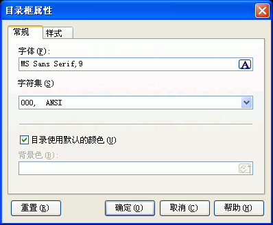

您可以通过在编译设置对话框里按"CHM设置..."按钮, 然后在"CHM设置"对话框里选取"其他"跳格，这时点击"目录框属性设置"按钮将看到这个对话框。关于这个对话框的使用请看下面的具体描述.

字体: CHM目录框的字体属性。
字符集: 决定CHM目录框里的语言字符集。
目录使用默认的颜色: 由于CHM格式关于前景背景色的设计不是很好,建议您总是使用默认的颜色。
背景色: 决定CHM目录框的背景色。